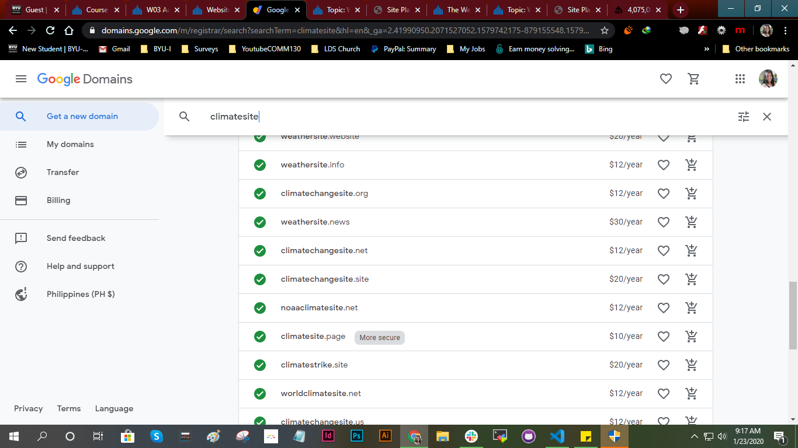

Site Name
This site is going to be called "climatesite.page".
Site Statement
This site is to describe the climatesite.page website, its purpose and intended target audience. It is to be used for the personal site as part of the CIT 230 course.
Site Purpose
The main purpose of the climatesite.com website is to educate users about the benefits of knowing the accurate (as possible) prediction of what the weather will be in the near future. This allows them to know the weather so they can plan their day ahead of time.
Site Domain
Site Logo
Icon obtained from IconFinder.com